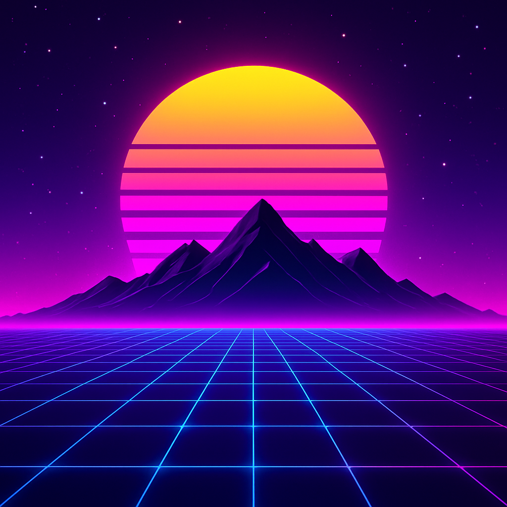

Neonin takana on yö
Vuorten yllä sykkii aurinko, kuin muistutus menneestä valosta.
Sähkölinjat kulkevat ajassa, verkostoina unelmiin kytkettyinä.
Kukaan ei kulje täällä enää, vain neonin haamu kertoo tarinaa.
Kuka olit, kun valo sammui? Entä kuka sinusta tuli pimeydessä?
